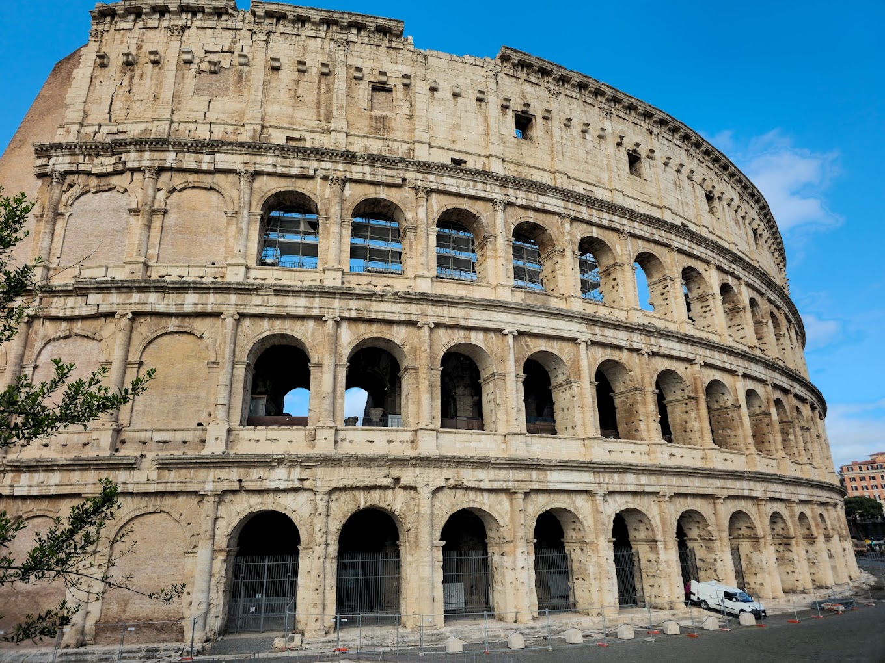
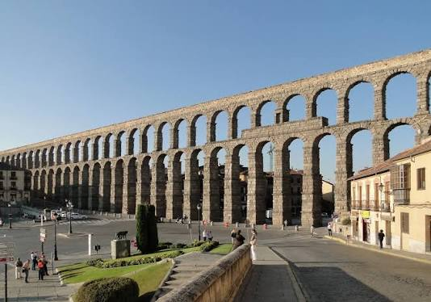
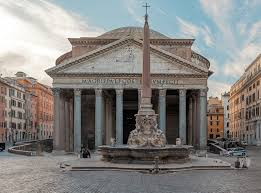
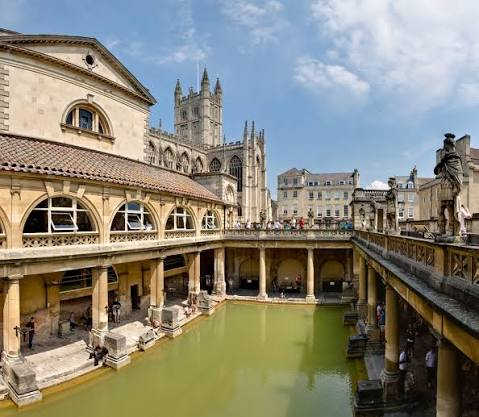
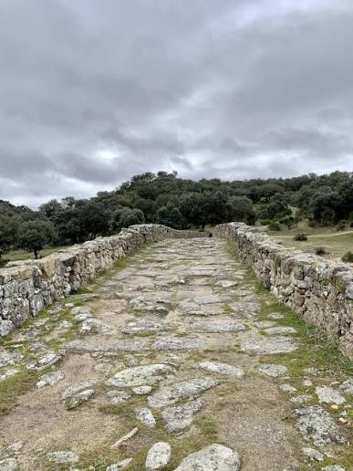
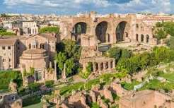

← Inicio
Hitos de la Ingeniería Romana

Anfiteatro Flavio: espectáculos masivos de gladiadores

Acueducto: transporte de agua mediante arquerías de sillería

Panteón de Agripa: cúpula de hormigón puzolánico con óculo

Termas públicas: baños calefactados con hipocausto

Vía Apia: red de calzadas que vertebró el comercio y las legiones

Foro Romano: centro neurálgico de la ley y la política